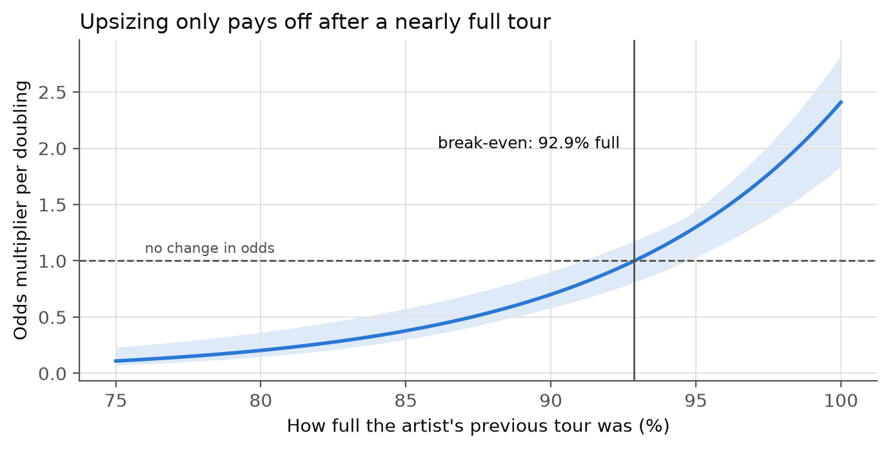
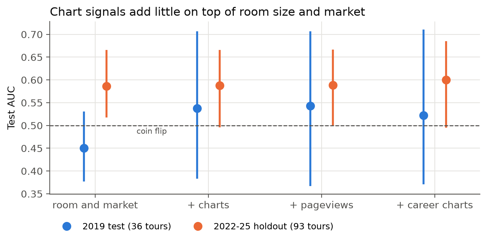

A talent buyer usually books an artist months before the show, sometimes while one of their songs is still climbing the charts. Too small a room leaves money on the table. Too big a room means empty seats, which hurts the artist and the venue. I wanted to know whether chart and streaming attention, measured six months out when a show would typically be booked, predicts which shows sell out. And if it doesn't, what should a buyer look at instead?
For artists with a previous tour, I compared each show's room with that tour's typical room. When the last tour was 100% full, doubling the room multiplied the odds of a sellout by about 2.4. After a 95%-full tour the gain shrinks to 1.3, and after a 90%-full tour doubling cuts the odds to 0.7. The break-even is 92.9% full.

Halsey's Love and Power Tour is the clearest case. Her previous tour was 83% full, the new rooms were 2.4 times bigger, and 2 of 21 shows sold out. The pattern held when any single tour was left out (break-even between 91.1% and 94.7%) and when "sold out" was loosened to 97% full. Shrinking the room showed no effect either way.
The raw numbers make charts look useful: artists with more chart activity do sell out more often. Most of that comes from bigger acts charting more and from later years selling out more. Once room size and market are in the model, the charts add almost nothing. I trained on 2017-18 tours and tested on tours the models never saw. On 2022-25 tours, adding chart signals left AUC at 0.587, where 0.5 is a coin flip. On 2019 tours it rose from 0.450 to 0.538, but with only 36 test tours the interval on that gain runs from -0.10 to +0.27. Wikipedia pageviews and Spotify streams did no better.

Before making an offer in a bigger room, ask one question: was the last tour at least 93% full? Looking back, 13 tours had at least half their shows upsized against that rule, and they sold out less often.
| Shows | Sold out | |
|---|---|---|
| Upsized against the rule (13 tours) | 211 | 70.1% |
| Every other show with a previous tour (106 tours) | 2,716 | 79.3% |
The check only needs two numbers a buyer already has: the last tour's fill rate and the size of the new room. A song climbing the charts can still be a good reason to look at an act. It just isn't evidence that the act can fill a bigger room.
Sources. Wikipedia concert tour articles, 2015-2025 (CC BY-SA 4.0), with a per-article list in docs/wikipedia_sources.csv. Billboard Hot 100 and Billboard 200 charts via utdata/rwd-billboard-data (chart data © Billboard). Wikimedia Pageviews API (CC0). Spotify charts via Kaggle, 2017-2021. Pollstar year-end Top Concert Grosses 2019, 2022 and 2023, used for validation only (© Pollstar). BLS CPI-U for 2024 dollars.